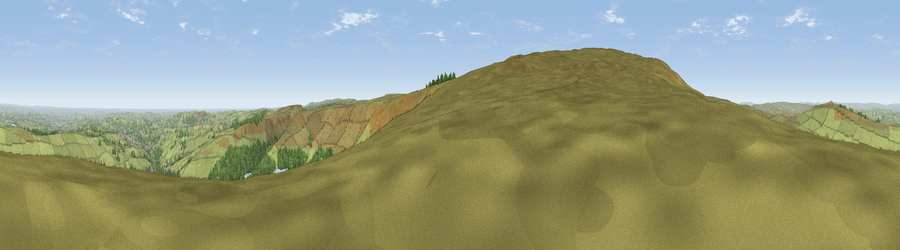

Viewpoint near Lane
#6477 in England · top 4% of its area beats it · near LaneThe view, rendered

A 360° render of this exact spot computed from the terrain model, tree cover and land cover — summer colours, afternoon light, calibrated against photographs of famous viewpoints. Real trees, hedges and buildings will differ in detail.
The panorama
Grey silhouette: terrain skyline in each direction (720 bearings, Earth curvature and refraction included). Dashed green: skyline with trees (+15 m) and buildings (+8 m) as obstacles. Blue strip: how far the ground is visible on each bearing.
Where the view opens
Wedge length = distance to the farthest visible ground on that bearing (vegetation-aware). Rings at 10, 25 and 50 km.
What fills the view
87% grassland · 10% woodland · 2% built-up ·
Angular shares of the visible panorama (visual magnitude), not map area. Landscape diversity 0.21 (0–1 Shannon).
Key numbers
More beautiful places nearby
The staircase of upgrades: each row has a higher view potential than everything closer. Driving times are estimates from straight-line distance, calibrated against real road routing — check an actual route before setting out.
| Place | Direction | Drive | Score |
|---|---|---|---|
| West Nab | NNW · 4 km | ~9 min | 69.4 |
| Viewpoint near Marsden | NNW · 6 km | ~13 min | 71.0 |
| Viewpoint near Jackson Bridge | ENE · 9 km | ~17 min | 73.5 |
| Viewpoint near Greenfield | WSW · 10 km | ~19 min | 76.0 |
| Viewpoint near Carrbrook | WSW · 12 km | ~22 min | 77.1 |
| Viewpoint near Edenfield | WNW · 30 km | ~47 min | 77.5 |
| White Brow | W · 44 km | ~64 min | 82.9 |
| Warton Crag | NW · 90 km | ~115 min | 83.2 |
53.54561, -1.85867 · source: screening · position refined by local search. Computed location — check access rights before visiting.